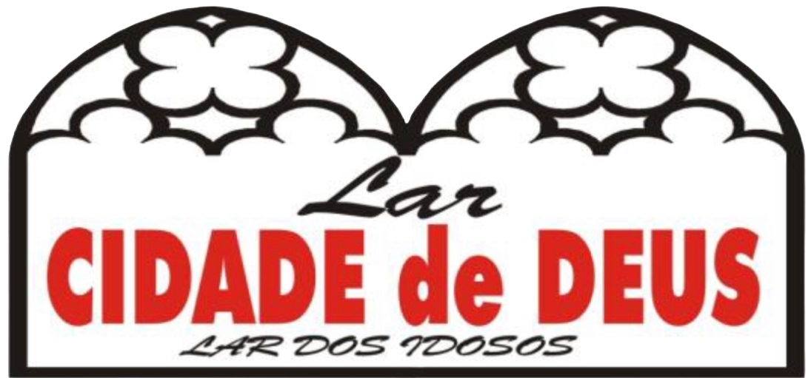
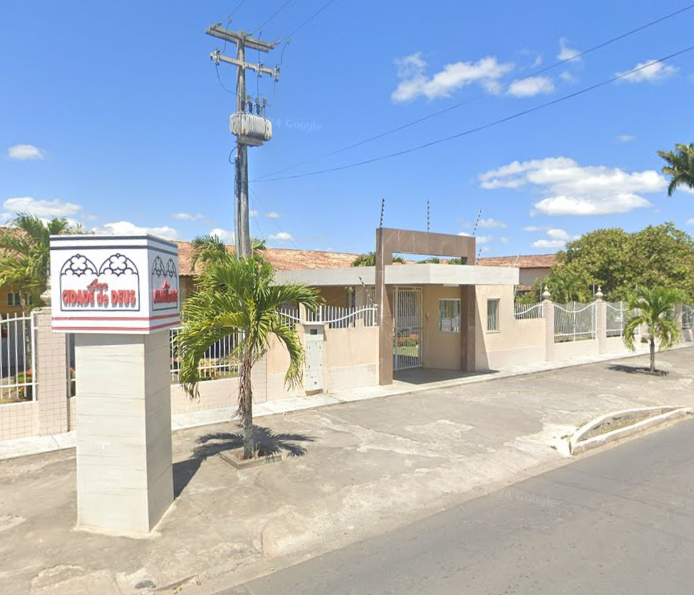
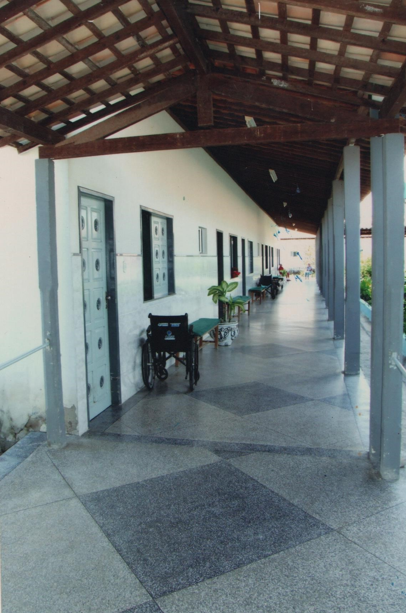
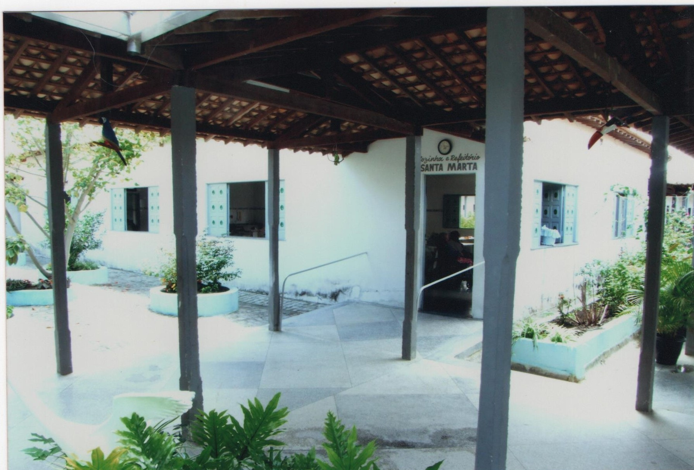
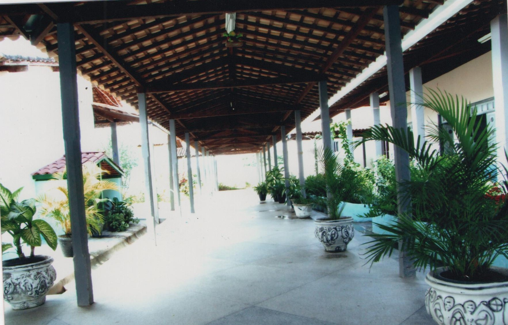
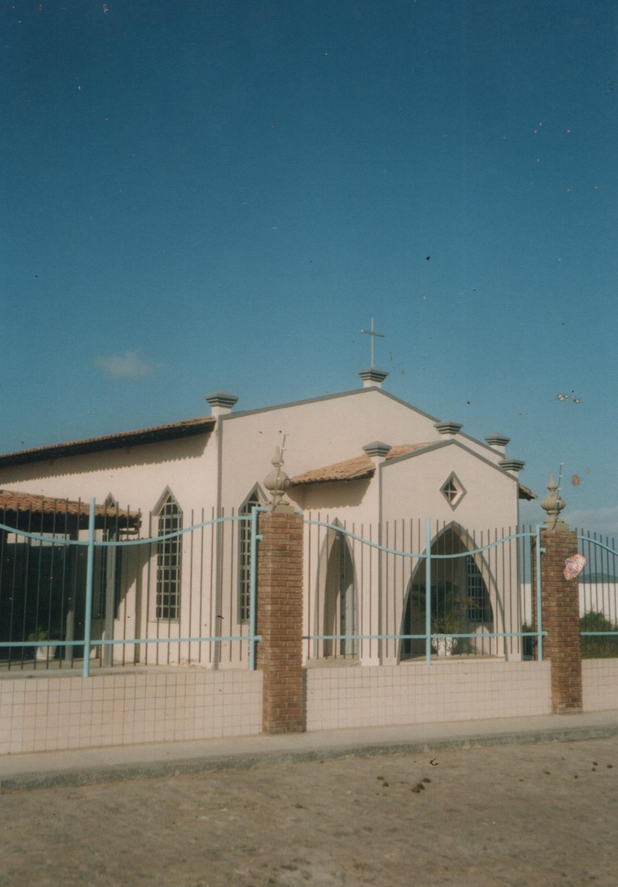

Lar Cidade de Deus
Conselho de Ação Social Católica de Itabaiana
Cuidado, dignidade e acolhimento para nossos idosos.
Um lar onde o respeito e o
carinho são prioridades.
Um verdadeiro lar para quem merece cuidado
O Lar Cidade de Deus é uma instituição criada com o objetivo de oferecer cuidado, dignidade e acolhimento a idosos. Surgiu a partir do desejo de ampliar a atuação social da Paróquia, especialmente na assistência aos mais velhos, funcionando como um verdadeiro lar onde o respeito e o carinho são prioridades.
2003
Ano de fundação
39
Quartos
+20
Anos de história
Serviços oferecidos
Nossa equipe multidisciplinar oferece atendimento integral para garantir o bem-estar de todos os residentes.
Serviço Social
Acompanhamento social, visitas domiciliares, atividades de integração e fortalecimento dos vínculos familiares com os residentes.
Enfermagem
Equipe com três enfermeiros e técnicos de enfermagem especializados em geriatria, com cuidado humanizado 24 horas.
Fisioterapia
Fisioterapeuta voluntária com atendimento duas vezes por semana, realizando reabilitação e manutenção da mobilidade.
Nossa estrutura
O Lar oferece uma estrutura completa para garantir bem-estar e dignidade aos seus residentes.
39 Quartos
Quartos privativos com banheiro individual, distribuídos em alas masculinas e femininas.
Posto de Enfermagem
Área exclusiva com cuidados paliativos, sala de enfermagem e leitos de recuperação.
Capela
Espaço de espiritualidade com missas mensais e celebrações semanais da pastoral.
Fotos da instituição





Localização
Endereço
Av. Padre Ailton Gonçalves de Lima, Nº 809
Bairro São Cristóvão, Itabaiana – SE
CEP:
49500-543
Telefone / WhatsApp
(79) 9 8853-5310Doe e transforme vidas
Sua contribuição ajuda a manter um espaço digno, acolhedor e cheio de amor para os nossos idosos. Cada doação faz uma enorme diferença na vida de quem mais precisa.
Quero ContribuirSiga-nos e acompanhe
Fique por dentro das novidades, eventos e projetos do Lar Cidade de Deus.